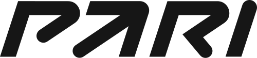

01 /Банковские услуги

ALFAOMEGA / ПАРТНЁРСКИЕ ПРОГРАММЫ
Компании, с предложениями которых работает AlfaOmega через партнёрские программы.
КОМПАНИИ / ПРЕДЛОЖЕНИЯ
Основные компании из перечня AlfaOmega. Сотрудничество ведётся через партнёрские программы.
Партнёрская программа может выступать посредником между компанией и AlfaOmega. Конкретные предложения, требования и условия зависят от выбранной программы.
Перечень компаний предоставлен командой AlfaOmega.


Альфа-Банк: MVTTXW$, Wikimedia Commons, CC BY-SA 4.0, без изменений. ВТБ: Wikimedia Commons. Логотипы Яндекса, Winline, FONBET и PARI получены из опубликованных материалов соответствующих компаний. Товарные знаки принадлежат их правообладателям.